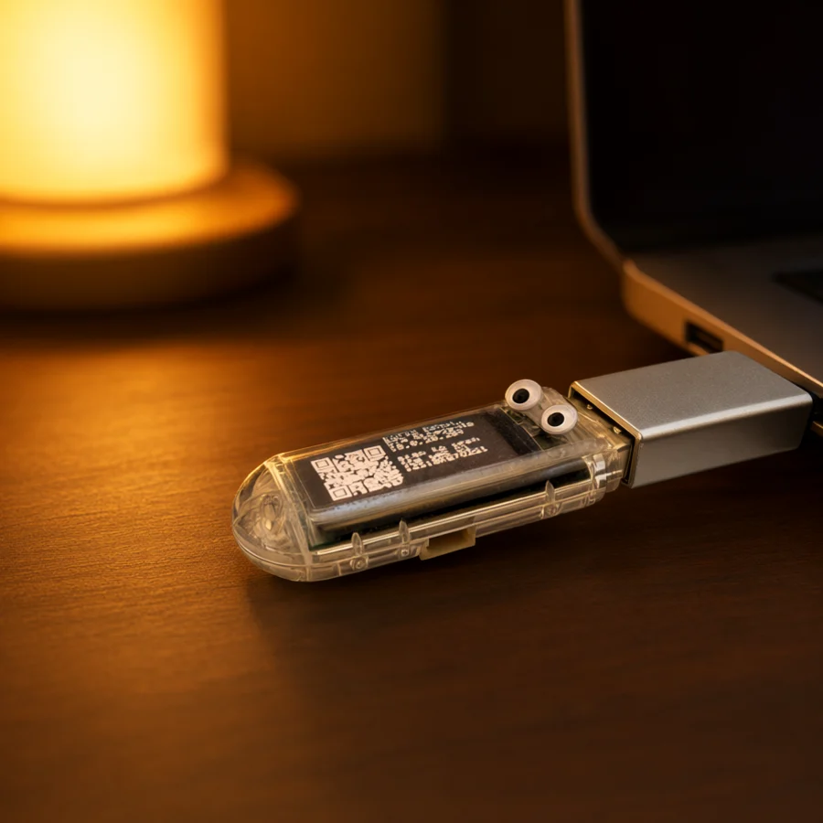

keebling
KEEB-ling
A baby keyboard in a dongle's body. It lives in a port, wears two googly eyes, and types for you.
Brand sheet · working draft
The character, mark, palette, and voice for Keebling — a baby keyboard in a dongle's body. Plus ten names that live in the same nest. Pick a name, shortlist it, see what sticks.
01 / The mark
Clear shell, green PCB, a screen, and two googly eyes on top. The plug stays the plug; it is the part that goes into the port. The eyes are the whole mark.
02 / Lockups
Lowercase always. Nunito 900, tight tracking. The tagline is the only place the "baby keyboard" joke is spelled out.
03 / The name lab
Same character, different name. Click a card to shortlist it — the pick is saved in this browser. The lead is marked; the rest are here to be argued with.
A baby keyboard in a dongle's body. It lives in a port, wears two googly eyes, and types for you.
A baby dongle. The most literal name; the least dignified. It owns the joke instead of hiding from it.
A creature with a USB-A plug for a snout. Cute, but "plug" is generic — and it loses the keyboard joke.
A baby switch with a big clack. Louder, cheekier, mechanical-keyboard native. The extrovert of the family.
A baby switch with a deep thock. The audiophile's keebling. If you know, you know — and if you don't, the tagline teaches you.
A baby typist. The name explains itself. Less creature, more job title — the sensible one in the room.
A creature that lives in the port. Puts the dongle first, the keyboard second. Snug, technical, a little nautical.
A tiny bit of keyboard. "Bit" is the nerd joke. Short, quick, a little mischievous.
A tiny key. Cleaner and more product-like. The least creature-y of the set — good if the brand should feel like an object.
Little fingers pattering across the keys. The most poetic; the hardest to say twice. Beautiful on a box, awkward on a command line.
04 / Palette
Cream and amber are the character. Ink and night are the machine. PCB green and glass are the body. Sage is the link light; sky is the one cool accent allowed in the UI.
05 / Type
Nunito carries the warmth. IBM Plex Mono carries the proof — addresses, codes, tokens, pin numbers. The device is playful; the facts are not.
The host sees a normal USB keyboard. Nothing is installed on the target, and nothing needs to be.
keebling.local
192.168.1.50
12-char code · 60 bits
{CTRL+ALT+DEL}
If it is a fact the user might type, copy, or say out loud, set it in mono. If it is a feeling, set it in Nunito.
06 / Voice
The README already has this voice. Keep it. The joke is always in the situation, never in the user's face.
“It's a keyboard. It's just not there.”
“The ultimate remote control solution.”
“Works before the OS does.”
“Seamlessly leverage your existing hardware investment.”
“A small warm thing in a cold machine.”
“Unlock unprecedented productivity.”
“Two googly eyes on top. The screen stays the screen. The plug stays the plug.”
“A revolutionary AI-powered input solution.”
07 / The character
The assembly never changes. Two googly eyes go on top, and the room gets cozy. The dongle, the adapter, the screen, and the plug stay exactly as they are.

The T-Dongle-S3 exactly as it ships: long clear shell, USB-A plug, 0.96-inch LCD, BOOT button. Nothing about the assembly changes.

Two googly eyes on the clear body. The screen stays the screen; the plug stays the plug.
08 / The device
The 160×80 LCD shows the link, the address, and the QR. The googly eyes are on the body, not the screen — which is the whole rule.